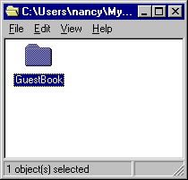

Table of Contents
Table of Contents  Previous Section
Previous Section
If there are any unsaved files, you are prompted to save them.
If there are any unsaved files, you are prompted to save them.

On Mac OS X Server, select the folder and press Command-D. On Windows NT, select the folder, choose Edit Copy, then Edit
Copy, then Edit Paste.
Paste.
Project Builder opens a new browser window for this project. (Alternatively, you could have opened the project from within Project Builder by choosing Project Open, then navigating to the project folder and selecting PB.project.)
Open, then navigating to the project folder and selecting PB.project.)
This command deletes all the files that were generated when you built the project previously.
You now have a new project called GuestBookPlus.
 Next Section
Next Section